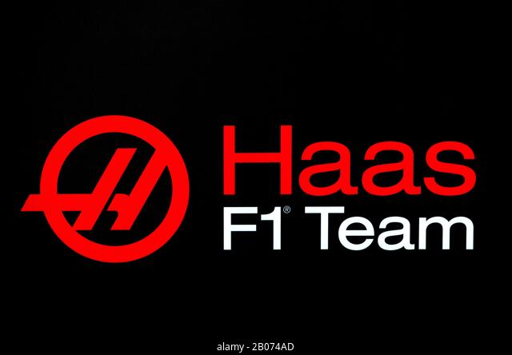
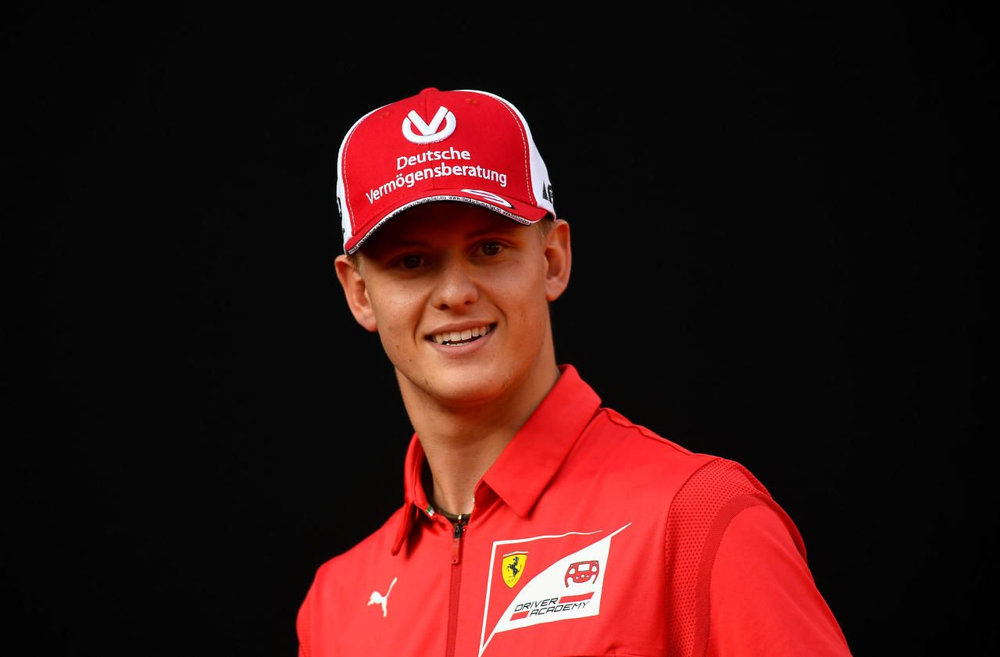
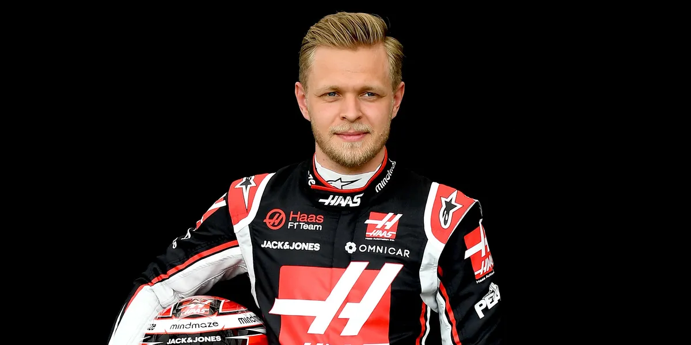

Haas

Haas est une écurie automobile fondée par Gene Haas. Elle fait ses début en formule 1, en 2016.
Elle connaît des débuts prometteurs avec notamment Romain Grosjean qui remporte une sixième place dès sa première course de l'histoire lors du Grand Prix d’Australie. Peu d'équipes peuvent se vanter d'un tel exploit. Malgré son peu d’ancienneté c’est une équipe qui évolue grandement, et qui accueille en 2022, deux grands pilotes de formule 1 : Mick Schumacher et Kevin Magnussen.
Les pilotes de la saison 2022 :
Mick Schumacher

Mick Schumacher est un pilote automobile allemand, fils du septuple champion du monde de Formule 1, Michael Schumacher. Vainqueur du championnat d’Europe de Formule 3 en 2018 puis du championnat de Formule 2 en 2020, il fait ses débuts en Formule 1 à partir de 2021, au sein de l'écurie Haas F1 Team.
Il débute sa carrière en 2008, en karting et ce jusqu'en 2014. L'année 2015 marque ses débuts en monoplace en Formule 4 et remporte de nombreuses victoires. Il évoluera ensuite petit à petit jusqu’à arriver en Formule 1 à partir de la saison 2021, pour le plus grand bonheur de son père, le plus grand champion de Formule 1 de tout les temps.
Kevin Magnussen

Kevin Magnussen est le fils de l'ancien pilote de Formule 1 Jan Magnussen. En 2012, le pilote danois roule en Formule 3 britannique chez Carlin mais rejoint en parallèle l’équipe F1 de McLaren en tant que pilote d’essais. En 2014 il rallie définitivement McLaren en tant que pilote permanent, aux côtés du champion du monde Jenson Button. Lors de sa première course en Formule 1, en Australie, Magnussen se classe deuxième. En 2016, après avoir été remplacé par Fernando Alonso,il rejoint Renault aux côtés de Jolyon Palmer mais ne finit que 16ème du championnat avec seulement 7 points inscrits. A partir de 2017, il fera parti de l’écurie Haas, jusqu’en 2022.